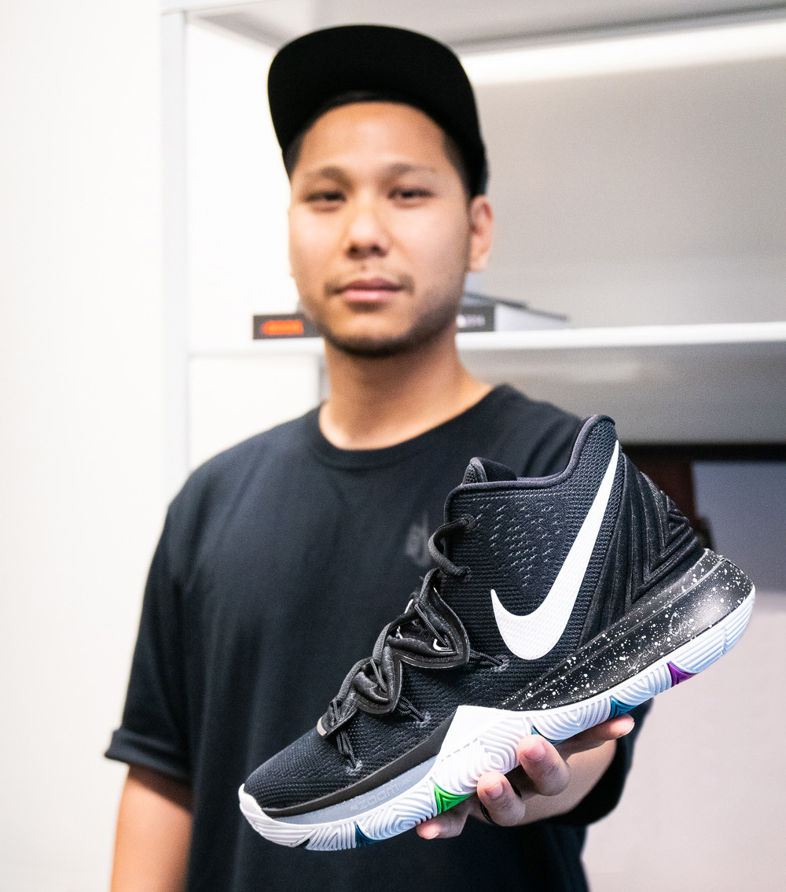

Benjamin Nethongkome, the lead designer of the Kyrie 4 and the new Kyrie Low. Nethongkome had been working for Nike since 2007 before taking the reins on designing the Kyrie 4 from his predecessor and mentor Leo Chang who was also working simultaneously on the Kevin Durant line. Prior to working with Kyrie, Nethongkome was in charge of developing the Mentality 2 and Mamba Rage for the Black Mamba himself, Kobe Bryant.
The Artist's Bio
Nethongkome was born in Thailand and moved to Miami at age 10. He spent a lot of time watching Irving hoop. In 2016, after nine years of working on a variety of basketball projects, Nethongkome was given the nod to take the helm of Irving’s signature line. Since then, he’s followed every in-game step — even going so far as to pirate game feeds through Reddit when all other options fail.